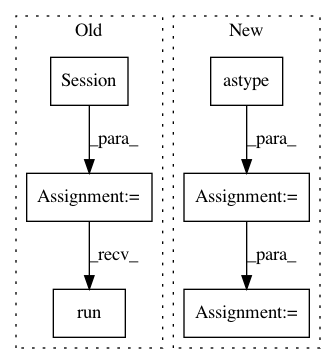

981e4266d4ea816b08a762193bd52f40cd1a3242,examples/mnist/keras/mnist_inference.py,,inference,#Any#Any#Any#,26
Before Change
util.single_node_env()
// load saved_model using default tag and signature
sess = tf.Session()
tf.saved_model.loader.load(sess, ["serve"], args.export)
// parse function for TFRecords
def parse_tfr(example_proto):
feature_def = {"label": tf.FixedLenFeature(10, tf.int64),
"image": tf.FixedLenFeature(IMAGE_PIXELS * IMAGE_PIXELS, tf.int64)}
features = tf.parse_single_example(example_proto, feature_def)
norm = tf.constant(255, dtype=tf.float32, shape=(784,))
image = tf.div(tf.to_float(features["image"]), norm)
label = tf.to_float(features["label"])
return (image, label)
// define a new tf.data.Dataset (for inferencing)
ds = tf.data.Dataset.list_files("{}/part-*".format(args.images_labels))
ds = ds.shard(num_workers, worker_num)
ds = ds.interleave(tf.data.TFRecordDataset, cycle_length=1)
ds = ds.map(parse_tfr).batch(10)
iterator = ds.make_one_shot_iterator()
image_label = iterator.get_next(name="inf_image")
// create an output file per spark worker for the predictions
tf.gfile.MakeDirs(args.output)
output_file = tf.gfile.GFile("{}/part-{:05d}".format(args.output, worker_num), mode="w")
while True:
try:
// get images and labels from tf.data.Dataset
img, lbl = sess.run(["inf_image:0", "inf_image:1"])
// inference by feeding these images and labels into the input tensors
// you can view the exported model signatures via:
// saved_model_cli show --dir <export_dir> --all
After Change
for batch in ds:
predictions = predict(conv2d_input=batch[0])
labels = np.reshape(batch[1], -1).astype(np.int)
preds = np.argmax(predictions["dense_1"], axis=1)
for x in zip(labels, preds):
output_file.write("{} {}\n".format(x[0], x[1]))
output_file.close()
if __name__ == "__main__":
In pattern: SUPERPATTERN
Frequency: 3
Non-data size: 6
Instances
Project Name: yahoo/TensorFlowOnSpark
Commit Name: 981e4266d4ea816b08a762193bd52f40cd1a3242
Time: 2019-08-07
Author: leewyang@verizonmedia.com
File Name: examples/mnist/keras/mnist_inference.py
Class Name:
Method Name: inference
Project Name: tensorlayer/tensorlayer
Commit Name: a6652b0c1997bb47dd502bf674e0b3b9b2d09d23
Time: 2019-05-16
Author: 1402434478@qq.com
File Name: examples/reinforcement_learning/tutorial_bipedalwalker_a3c_continuous_action.py
Class Name:
Method Name:
Project Name: tensorlayer/tensorlayer
Commit Name: 6ca2a6359dc1374bfb211da8680f3d5f319cdaa5
Time: 2019-05-16
Author: 1402434478@qq.com
File Name: examples/reinforcement_learning/tutorial_bipedalwalker_a3c_continuous_action.py
Class Name:
Method Name: